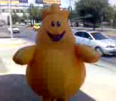
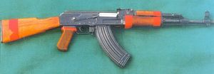
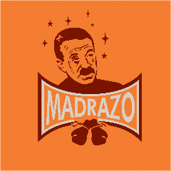
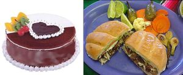

Regionalismos Mexicanos
 De: La Frikipedia, la enciclopedia extremadamente seria.
De: La Frikipedia, la enciclopedia extremadamente seria.
El lenguaje mexicano es muy variado. La única forma de hablar un correcto español de México es ir a vivir allá y lo podrás dominar perfectamente.
Es importante destacar que no importa con que fuerza lo intentes, de todas maneras cualquier cosa que digas en México será malinterpretada, tomada como burla, altamente ofensiva y muy probablemente te partirán la cara o, más a la mexicana, la jeta/madre.

He aquí un maestro ampliamente versado en este arte lingüístico.

Yamcha aprueba este diccionario
A
- abogángster: 1. Abogado. 2. Político en su etapa larval.
- aborregado: 1. Alguien que es muy lento y parece tonto 2. El cielo cuando está lleno de nubes esponjositas.
- abrir cancha: Dar espacio.
- abrirse: Acobardarse, hacerse a un lado, huir, evitar confrontación: Se le abrió a ese puto.
- abstemio: Dícese del masoquista que no tiene la suficiente fuerza de voluntad como para dejar de castigarse.
- abusado: Alerta, vivo, despierto, agudo.
- acelerado: Frenético, hiperactivo.
- acoplar: Esta palabra se puede ver como una invitación no formal, ya que a veces los eventos suelen no suceder, entonces está entre un aviso y un recordatorio.
- ー Wey que onda.
- ー ¿Qué cuentas?
- ー Ayer hubo una peda en casa de la Chiquis, ¿por qué no te acoplaste? Estuvo con madres.
- ー No m...e digas eso, ¿neta estuvo chido? ¿por que no me acoplaste?
- acordeón: En el ámbito escolar, pedazo de papel doblado en forma de acordeón para que así pueda ser escondido con facilidad y desplegado en el momento indicado (durante el examen) discretamente. Se debe destacar que por curiosa coincidencia en dicho papel hay notas pertinentes a la temática del examen; es perfectamente legal en la medida que el profesor no lo descubra.
- acostón: Encuentro furtivo entre dos personas (mujer-hombre, hombre-hombre, mujer-mujer, mujeres en bola u hombres en bola, al gusto del candidato) que deriva en sexo esa noche y olvido al otro día. Invariablemente, uno de los dos involucrados amanece crudo y con un remordimiento que se manifiesta con la cabeza baja y la mano derecha en la frente y el silencio absoluto. El otro no deja de sonreír y contar la hazaña a los peores enemigos del primero.
- achacoso: Que se queja de alguna cosa sin sentido.
- achicopalado: Triste, desanimado.
- achicopalar: Avergonzar, humillar, cohibir.
- achicharrar: Quemar algún objeto.
- achichincle: 1. Ayudante o asistente político, despectivamente 2. Persona que es perro o chalán de otro, la otra persona solo lo usa con fines de ayuda y abuso.
- a chingadazos: Someter con violencia.
- a Chuchita la bolsearon: Excusa, pretexto.
- adefesio: 1. Persona fea o rechazada por la sociedad así como IP anónima (sin ofender) 2. Último éxito de Paquita la del Barrio.
- a fuercioris: Por la fuerza.
- agachón: Persona pusilánime.
- agandallar: Aprovecharse de otro sujeto.
- agarrado del chile: Expresión usada para los tipos que andan tras de una mujer y esta lo trae haciendo cualquier tontería que se le ocurre: ー¿Qué onda con tu carnal, que le dio esa morrita? Ya ni saluda ーAsí es, esa morrita lo trae bien agarrado del chile.
- agarrar en curva: Encontrar desprevenido.
- agarrar la jarra: Ponerte una buena borrachera con tus cuates, y seguírtela durante unos cuantos días.
- agarrar la onda: Entender, capturar la esencia, entrar en conciencia o cualquier cosa que pretenda decir que se nos quitó lo pendejo. Verbo que le fue negado de origen a políticos y milicos.
- agarrar patín: Divertirse, hacer gracia.
- agarrarse del chongo: Pelear, particularmente entre mujeres.
- agasajo: Encuentro amoroso pasional que no llega, sin embargo, al acto sexual.
- a golpe de calcetín: A pie.
- a grito pelado: A grandes voces.
- agruras: Acidez estomacal, esa que te da por comer tanto taco.
- aguado: 1. Antisocial 2. Flojo, perezoso, huevón.
- aguafiestas: 1. Persona que turba la diversión, que es un amargado. 2. Encargado de la preparación de las aguas locas en las pedotototas de bajo presupuesto.
- aguanta: Sinónimo de "espera" pero con un toque de flojo.
- aguantar vara: Lo contrario a rajarse, es decir, sostener la promesa. Lo que resulta de esto es generalmente una cruda biológica, ideológica o moral, depende del grado de fealdad de la cita a ciegas. Hay suicidios registrados por casos como el descrito.
- aguas: 1. Que tengas cuidado o que te fijes bien 2. Grito que hace una persona que vende agua.
- agüero: Dícese, dirése y dijérase de aquello que es un sinónimo para suerte, mala la mayoría de las veces.
- agüite: 1. Tristeza 2. Vergüenza 3. Molestia.
- agujero: Referencia al ano.
- ah, jijo: Interjección de perplejidad, asombro, incredulidad.
- ahí muere: Expresión usada para finalizar algo, o para solicitar paz.
- ahí nomás: Regular, ni mal ni bien. Respuesta a interrogativas sobre una condición, estado de ánimo, etc.
- ahí nos vidrios: Despedida, "ahí nos vemos".
- ahí se va: Frase que indica indiferencia ante lo mal hecho que esté una cosa.
- ahogado: Borracho, muy borracho. Dícese de estar bajo el agua sin respirar.
- ahorita: Expresión que se usa para decir que harás una cosa después o nunca, mientras tu progenitora o quien te lo haya pedido pretende que esa cosa se realice ahora mismo, o en este momento.
- a huevo: 1. A fuerza. Se cree que la razón para sustituir una palabra por otra es puramente nutricional: el huevo contiene vitaminas, colesterol, proteínas, carbohidratos y lípidos con los que aporta fuerza al organismo. Por otro lado, es bien sabroso gritar la frase en medio de un estadio cuando nuestro equipo anota un gol 2. Expresión usada para afirmar algo: Ahuevo que si me tiro a la chona (traducción: claro que tengo relaciones con la chona).
- ala: Usado cuando algo se debe hacer a chaleco, úsese como abreviación de a la fuerza, pero no la fuerza pública.
- a la brava: 1. Descuidadamente, desconsideradamente 2. Someter los intereses propios a la fuerza.
- a la chingada: Interjección equivalente a al infierno.
- albur: Palabra de importancia capital para los mexicanos. Significa tener doble sentido, además de usar las propias palabras de una persona para burlarse de ella. Alburear es la suerte lingüística en la que logras decirle a alguien algo con doble sentido sin que esta persona lo imagine venir. Anótate un punto si la persona es del sexo opuesto al tuyo, anótate dos si es extranjera/o, anótate tres si es atractiva/o y anótate cuatro si le tienes que explicar que la/lo albureaste. Estadísticas recientes arrojaron que estas variantes del idioma constituyen de un 50 a 90 % del total de comunicación verbal entre los mexicanos.
- Ejemplos sumamente sencillos:
- Dos estudiantes que como parte de una asignación tienen que sacar copias de un libro:
- ー ¿Me la sacas?
- ー ¿Te la saco?
- ー ...las copias.
- Valor: 4 puntos, se lo tuvo que hacer notar.
- Turista extranjera que desea conocer la ciudad a un mexicano:
- ー ¿Me la enseñas?
- ー ¡Si quieres te la enseño todita!
- Valor: 3 puntos, suponiendo que es atractiva 6, si se lo tuvo que explicar 10... Score perfecto.
- Una pequeña serie de albures, comunes en cualquier lugar de México en pláticas entre amigos:
- ー A ti te gusta el chile, ¿verdad?
- ー Agárrame que me caigo.
- ー La almeja se come rica en Acapulco.
- ー ¿Abres aquella lata?
- ー A tu hermana la vi ayer.
- ー Cambiando de tema ¿cómo llego a tu casa? Tu mama me invito y no me quiero perder.
- ー Pues puedes agarrar por la glorieta de camarones.
- ー Salgo mejor por atrás de claverias.
- ー ¿Claverias? Tardo menos por atrás de Parque Hundido y en Pino Suarez doy vuelta para clavarme por el centro.
- ー Pues tú dirás, es tu casa.
- Nótese que en la última linea uno no sabe qué responder, dándole el triunfo al otro hablante. Una serie no tiene puntuación, solo tiene un ganador y un perdedor.

Acordeón. Es perfectamente legal en la medida que el profesor no lo descubra
- al chile: 1. Derivado de barrio de "no me importa" y "vamos al diablo" o para expresar las cosas sin rodeos 2. Se usa cuando se quiere ir a un punto en concreto. 3. Úsese y dícese alejado de dimes y diretes, la neta o verdad absoluta.
- al cuas: Arruinado, cansado, en malas condiciones.
- alebrestarse: Agitarse, alborotarse, encabronarse.
- algarapato: Agarra al pato pero mal escrito, se dice de aquel que hace mucho escándalo y por nada.
- al pedo: Bien, bueno. Estar al pedo siempre va acompañado de una mujer al pedo y de una cerveza al pedo, mayormente en las comunidades latinoamericanas.
- alipuz: Bebida alcohólica de cualquier tipo.
- alivianar: Mejorar, calmar.
- al puro chingazo: Exactamente, perfectamente al hay se va.
- al ratón vaquero: Al rato.
- al tiro: Muy bueno, excelente.
- al mosh: Tipico baile en el cual se ponen como cabras y se pegan unos con otros.
- amartelado: Dícese de aquellos calenturientos que están
follando enamorados.
- amiga: Dícese de la persona del sexo opuesto que tiene ese no sé qué que elimina toda intención de querer acostarse con el/ella.
- amigui: Palabra más usada por las niñas fresas y las locas para mencionar a su amiga (solo a las amigas, si se dicen entre amigos entonces son putos).
- amistad: Contrato por el cual nos obligamos a hacer pequeños favores a los demás para que los demás nos hagan favores grandes a nosotros.
- amolar: Echar a perder o descomponer algo: Ya se amoló mi carro.
 Botarga mal lograda: No sabemos qué diablos se supone que es ¿Un maní, una pera, un
Neopet o qué demonios?
- ándale: 1. ¡Exacto! 2. Palabra para incitar a alguien, debería significar "¡Corre!", "¡Ve!" o "¡Vamos!", pero lo cierto es que jamás usamos la expresión, eso déjaselo a Speedy Gonzales.
- ándale pues: De acuerdo. Ok.
- andar tras de los huesos de: Cortejar, acosar sin escrúpulos.
- antrear: Irse de disco o antro.
- apantallar: Presumir, deslumbrar.
- apañón: Acto en el que una cierta autoridad descubre in fraganti a algún manoseador de leyes (o de muchachitas de menos de quince años) y, también fuera de la ley, se aprovecha de la situación para incrementar su riqueza personal.
- a papuchi: Cargar en los hombros a una persona.
- a pelo: Exactamente, al natural.
- aperingar: Agarrarse o aferrarse fuerte a algo.
- aplatanado: Sin energía, lento, pasmado.
- a poco: 1. Acaso. Usada con interrogativo, expresión que pide confirmación o conformidad 2. Interjección de sorpresa, admiración, incredulidad.
- apretado: 1. Persona que muy difícil es que consigas algo de ella. 2. Que no accede a "rebajarse" a un nivel mas bajo.
- apretarse: Negarse a hacer algo, ser poco accesible.
- apuntarse: Acompañar a otros, hacer lo mismo que los otros hacen.
- apurale: Terminar lo mas rapido posible lo que esta haciendo uno, para ir de fiesta, borrachera, mayormente porque va uno tarde a la escuela.
- a raíz: Descalzo, tocando el suelo.
- araña: Mujer libertina, generosa con sus favores sexuales.
- arderse: Sentir envidia y despecho por vanidad herida.
- argüende: 1. Palabra utilizada para definir una plática chismorrera. 2. Chisme, lío.
- arnero: Automóvil en malas condiciones.
- arrastrado: Persona obsecuente.
- arrastrar la cobija: 1. Estar deprimido, triste. 2. Sentir atracción por una persona.
- arrumaco: Del vervo pegadito, cuando dos personas se dan caricias! o un faje.
- a toda madre: Buenísimo, estupendo, maravilloso.
- a todo dar: 1. Buenísimo, estupendo, maravilloso 2. Muy simpático.
- asu: Que parece relevante, asombrarse de algo
- autoestima: Autoevaluación errónea.
- aventón: Acción de llevar a un pasajero gratuitamente o fiado.
- aventado(a): Persona muy atrevida y/o osada.
- aventar lámina: Dícese del acto vandálico, antisocial por excelencia, que realizan ciertos conductores de todo tipo de calaña. Consiste en, obviamente, aventar la lámina del auto o microbús propio, cerrándole el paso violentamente a los peatones, conductores, motociclistas y/o vehículos que transitan por las calles, avenidas, cerradas, glorietas, ejes viales, estacionamientos, viaductos, calzadas, banquetas, puentes, desniveles y callejones.
- aventarse: 1. Atreverse, osar 2. Ser muy hábil, diestro, tener talento.
- aventón: Acción de llevar un conductor a un pasajero gratuitamente.
- aviador: Empleado (sobre todo un dependiente de gobierno) que resulta en la nómina pero que no se presenta al trabajo sino hasta que aterriza para cobrar el cheque.
- awelita soy tu nieto: Por supuesto.
- azorrillado: Escarmentado, asustado.
B
- ba'ca: Tratando de decirle a la otra persona el lugar exacto donde quieres poner eso.
- baboso: Se puede entender viscoso, pero el significado primordial es el de tonto, idiota, en el sentido de retardado: Barney el dinosaurio es una soberana babosada.
- babucha: Llamado así a las pantuflas o zapatos viejos.
- bacha: Colilla de cigarrillo de marihuana.
- bajar: 1. Robar, quitar 2. Acción de tener sexo vía oral.
- bajar por los chescos: Hacer una mamada, lamer y/o libar un pene.
- baje: Robo, asalto, despojo flagrante. Lo que sucede cuando uno deja su cerveza fría a la vista de todos en la fiesta y gira para platicar con la morena atractiva. Lo que sucede cuando uno deja a la morena atractiva a la vista de todos en la fiesta y gira para beber un poco de cerveza.
- balín: No efectivo, inútil, de mala calidad.
- banda: 1. Conjunto de personas que tienen algo en común y se identifican entre ellos (tus amigos pues). 2. En el norte, conjunto de personas que gusta de reunirse para pegar de alaridos y vapulear tambores, úsese en la expresión música de banda.
- banqueta: La acera de una calle.
- bañar: Lo mismo que en cualquier lado pero aquí se utiliza cuando alguien exagera en cierta acción o acto (especialmente si es una broma pesada) es como decir te pasaste. Puede utilizarse como te bañaste y como te la bañaste.
- bañársela: Exceder los límites de la moral y de las buenas costumbres preestablecidos.
- baquetón: 1. Desvergonzado, que le importa poco cómo afecta a los demás su comportamiento. 2. Holgazán, persona de genero masculino encargado de no hacer absolutamente nada, además evitar que las cervezas se calienten.
- baquetona: Persona de genero femenino caracterizada por usar pijama durante todo el día y clásicos tubos en la cabeza destacada por no hacer de comer en todo el día y chimorrear 23 de cada 24 horas del día.
- barajarla más despacio: Explicar con más detalles.
- barbero: Persona que le anda lamiendo el culo a otra a cambio de algún favor o simplemente para quedar bien, generalmente estos son excluidos de la sociedad y actualmente se realizan estudios para descubrir una vacuna y erradicarlos.
- barrer: Mirar de arriba a abajo a alguien con desprecio.
- barros: Masas gigantescas de acné, las cuales por lo general aparecen en la pubertad por la calentura y jalarle tanto el pescuezo al ganso.
- basca: Despues de la fiesta o en ella puede que te de esta sensacion que te hace regresar todo lo que has comido en la tarde o por tragar demasiado alcol se una este medio para que tengas mas espacio.
- bataca: Batería (instrumento musical).
- batear: Rechazar a alguien.
- basca: Asco, basura, vómito.
- bemba: Boca, buchaca, jeta, la cavidad a la que se le meten los chicharrones pa'
engordar.
- besho: Pidiendo a la persona del sexo opuesto una caricia en la boca porque andas peliao con el(la).
- bestia: Y no el de los X men, persona a la que le estas explicando algo y no entiende, terminas diciendole eso.
- betado: Que ya no puedes regresar a ese lugar disece escuela, antro, hasta tu casa aveces.
- bien lejos: Ser atractivo a una cierta distancia.
- bien parado: 1. Estar en buenas relaciones, tener buenas conexiones 2. Que no tiene disfunción eréctil.
- bil kates: Dicese tratando de referirse a bill gates o a unos hot cakes que preparo ru mama.
- birote: 1. Asunto 2. Tipo de pan parecido a la baguette francesa. 3. Órgano reproductor masculino.
- birria: 1. Cerveza. 2. Carne de chivo.
- bisne(s): Asunto, negocio por lo general de origen ilícito.
- bizcocho: Mujer atractiva de grandes atributos y curvas marcadas.
- blanquillos: Huevos de origen animal los cuales aclarando no son testículos, por lo general son de gallina y también son conocidos como el caviar de los pobres.
- bla bla bla: Tratando de resumir una platica larga con estas palabras describes los proximos 15, 20 minutos, en algunos casos horas para no perder el tiempo.
- bocho: Volkswagen Beetle... ese maldito auto que parece la mitad de un huevo pero que es altamente eficiente y duradero.
- bodorrio: Causa y efecto de haberse comido la torta antes de tiempo y haber dejado embarazada a la novia.
- bofeado: Sin aliento por un esfuerzo.
- bolas: 1. Pesos. 2. Testículos.
- bombo: Molido, destruido, rendido, harto, muy cansado.
- bonito chiste: 1. Cuando se promete algo y no se cumple. 2. Se dice de un chiste supermaquillado y marica.
- borlote: Fiesta, bulla, alboroto.
- bronca: Pelea, lío, problema.
- bronco: Huraño, no acostumbrado a tratar con la gente, casi salvaje en modales.
- brusqui/bruski: ETIMOL. de la jerga en inglés brewskie. Cerveza .
- boster: Que en realidad es boxer! del vervo lo que te pones en lugar de calzon.
- botana: Charla divertida, broma.
- botarga: Es el nombre con el que se conoce al disfraz de un personaje, siendo que dicho personaje casi siempre es la mascota de una clara compañía, emblema o entretenimiento en fiestas infantiles.
- bote: Cárcel, prisión (lugar más horroroso del planeta, aparte de la casa de la suegra).
- bubis: ETIMOL. del ingles boobs. Forma más apreciada en el habla para evitar decir "senos" o "tetas", palabras que se consideran jocosamente apropiadas. Debido a que este termino fue popularizado a nivel nacional por un imbécil profesional llamado Adal Ramones sucede que si usas la palabra te das a entender pero puedes quedar como un idiota en el proceso. Se recomienda mejor pechos o pecho y que el contexto te acompañe.
- buchón: Vendedor de droga.
- buchona: 1. Manera despectiva de las mujeres para llamar a otra mujer que posee más y mejores atributos de frente. 2. Mujer pechugona y con buen tamaño de bubis.
- buen pedo: 1. Flatulencia de excelente hechura (olor, consistencia y permanencia). 2. Personaje de noble corazón, generoso y humano. Como lo anterior no existe, usamos el término para definir a aquel que no molesta a nadie y no arma líos, nomás se emborracha en una esquina y no vomita.
- bueno/buenón/buenote: Guapo, atractivo, de buen aspecto.
- buey: (pronunciado güey) Idiota. También se usa como término informal entre hombres.
- buki/buqui: En algunas regiones del norte del país, niño.
- burra: 1. Autobús. 2. Bicicleta alargada.
- burro: 1. Persona que no estudia, no le gusta estudiar o simplemente que no entiende bien las cosas. 2. Hombre con órgano reproductor de gran tamaño.
C
- cabrón: El significado puede variar, desde una persona sobresaliente hasta una mala persona. También puede referirse con esta palabra a una persona no necesariamente sobresaliente o mala, solo por lo huevos de decirle cabrón.
- Alex es un cabrón: es una persona muy exigente, que le gusta dar órdenes.
- Alex platicó con este cabrón: esto es que Alex conversó con una persona.
- Está cabrón: para decir que algo está muy difícil.
- Ese tipo es bien cabrón para las computadores, lo sabe todo, así, todo, lo que le preguntes, de programación, webs, sistemas operativos: para decir que alguien es el mejor en su campo. Esto significa que el personaje en cuestión es un friki y que muy probablemente carece de vida social y requiere salir.
- cachar: Atrapar, capturar, pillar.
- cacharpa: Monedas de poco valor.
- cachetear banquetas: Estar muy enamorado.
- cachetón: Alguien que se la toma cómoda, que no se esfuerza.
- cachirul: Trampa, engaño.
- cachorrear: Acto en el que dos personas se besan y tocan sexualmente.
- caer de a madre: Detestar, odiar.
- caer gordo: Resultarle antipático a alguien.
- caerse los chones: Quedar azorado, sobresaltado por la sorpresa.
- cafre: Peligroso al volante de cualquier vehículo (no varía en el femenino).
- cagarse: Asustarse mucho.
- cagar el palo: Molestar con alguna acción fastidiosa.
- cagarse parado: Estar sorprendido o sorprenderse.
- caguama/cagua: Cervezas en presentación de un litro que los veinteañeros consumen en las calles para después lanzar el vidrio por la ventana del auto.
- cajearse: Tener obligación de pagar.
- calaca: 1. Esqueleto humano. 2. Por extensión, la Muerte.
- caldo: 1. Comida caliente con base líquida. 2. Besos entre dos personas, generalmente paradas.
- caliente: 1. Estado metabólico en el que las hormonas son más fuertes que las neuronas. En lo único que se piensa es en tener sexo, por lo que nuestra gracia natural se desvanece y nos convertimos en mandriles en celo. 2. Puede usarse como enojo cuando una persona ha sido agredida o molestada: Ahora sí ya me calentó.
- calote: Fornido, musculoso, muy fuerte.
- calzonear: Apurar, incitar a la rapidez.
- cámara: Vamos, adelante, échale.
- campal: Un zafarrancho centrado en media calle o un establecimiento.
- campechano: 1. Oriundo del estado de Campeche. 2. Indolente, despreocupado. 3. Contradictorio. 4. Estúpido, baboso.
- camotes: Muy cansado, molido, agotado o adolorido.
- canas verdes (sacar): Desesperar, abrumar.
- canijo: Difícil, complicado.
- cantar mal las rancheras: Quedarse atrás en cuanto alguna habilidad poco recomendable.
- cantón: Una casa o refugio.
- capear: Entender, aceptar una propuesta.
- capirucha: ETIMOL. de capital. La Ciudad de México.
- carcacha/carcancha: Viejo automóvil destartalado.
- carcamán: Viejo (despectivamente).
- carita: Guapo (usado exclusivamente por mujeres).
- carnal: Hermano, amigo íntimo: Qué onda mi carnal.
- carrilla: Burla, molestia, presión.
- carrilludo: Criticón, burlón.
- cascabelear: Estar enfermo, no comportarse normalmente.
- cáscara/cascarita: Partido de fútbol callejero en el que los participantes pensamos que somos Ronaldo y los que observan piensan que somos unos pobres diablos.
- cascarear: Jugar básquet o baloncesto.
- castrar: Dícese de la acción de molestar o chingar/chingar la madre a una o varias personas, ya sea física o psicológicamente. Normalmente se castra a alguien por su aspecto físico hasta el momento en que llora, cuando todos hacen como que se conmueven, esto para evitar un duro castigo si estás en la escuela.
- cateado: Arruinado, cansado, en malas condiciones.
- catego: ETIMOL. de categoría. Alta calidad, alcurnia o esfera social alta.
- catrín: Elegante, adornado con mucho esmero, ostentando lujo.
- cerote: Porción compactada de excremento humano.
- chaca: 1. Persona que se ve bien o hace algo bien. 2. Reggaetonero, ladrón (comúnmente usado en el Distrito Federal).
- chacha: Peyorativo de sirvienta.
- chachalaca: Persona locuaz.
- cháchara: Objeto de poco valor.
- chácharas: Las que son chachas y cucharas, o también baratija.
- chafa: De poco valor, no auténtico, pirata.
- chaineado: Limpio, lavado.
- chalán: (sólo en masculino) Ayudante, servidor, asistente.
- chale: Expresión utilizada en varios sentidos, con la intención dar a entender el estado de ánimo en que nos encontremos.
- ーFíjate que Alex choco su auto.
- Simplemente decimos en tono de aflicción "chales".
- Alguien que se siente superior a nosotros y nos quiere humillar con sus conocimientos. Únicamente argumentamos en tono escéptico "chales con este we"
- chamaco: Véase escuincle.
- chapopote: ETIMOL. del náhuatl chapopotl. Brea, pez o alquitrán.
En algunos lugares de México se usa para rellenar baches en las calles ¡Visite México, es Hermoso! (se agradece a la Secretaria de Turismo de México meter sus garras el patrocino de este artículo).
- chavala/chabala: Persona que se mete en lo que no le importa: se chavaleó con los que pintearon la clase de inglés.
- chamagoso: Sucio pegajoso, mugriento.
- chance/chanza: Oportunidad, posibilidad, ojalá.
- chancla: Mujer homosexual.
- chance: Se refiere a que des una oportunidad o permiso.
- changarro: Negocio, tienda modesta o puesto callejero.
- chao: ETIMOL. del italiano ciao. Adiós, hasta luego.
- chaparro: Persona de baja estatura.
- chaperón: Acompañante no deseado.
- chaqueta: Palabra utilizada cuando nos jalamos el miembro para liberarnos de toda la presión en nuestra mano o papel, si cuando terminas sientes remordimiento quiere decir que estás enfermo.
- charola: Placa, distintivo de la policía.
- charra: Especie de chiste, cuento largo y gracioso.
- checar/chequear: 1. Revisar, controlar 2. Combinar bien, hacer juego, pareja.
- chela: Fermento de cebada que tiene la cualidad de lograr que el enemigo se vea como amigo, que el jefe se vea como empleado, el feo como atractivo y las penas como motivo de júbilo. El exceso en su consumo provoca mal humor al día siguiente.
- chemo: 1. Adicto a las drojas. 2. Pegamento fuerte, inhalado para intoxicarse. 3. Dícese de aquel producto que te hace volar.
- chero: (abreviación de ranchero) Rústico, no acostumbrado a tratar con la gente, poco refinado.
- chescos: Bebida de sabor y gas carbonatado cuya única función en la vida es darle un saborcito dulzón a las cubas. Coca-Cola y Pepsi son los más conocidos, pero hay unas subespecies neoyeyé y hardcore que corren por el mundo como el Caballito, los Jarritos de tamarindo, el Boing de guayaba, los Barrilitos de uva o las clásicas Chaparritas de mandarina, y el cristal obscuro.
- cheve: Cerveza, jamás confundir con cereza.
- chévere: Muy bueno, fantástico, fenomenal.
- chetes: Cachetes o mejillas traseras.
- chicano: Persona de origen mexicano nacido en EEUU. Se caracteriza por ser un mexicano que no habla bien español y nunca ha comido un taco o tortilla decente. Se luce como mexicano entre los estadounidenses y como estadounidense entre los mexicanos, por lo que es despreciado por mexicanos y estadounidenses.
- chicle: Como la goma de mascar, se trata de alguien que está siempre encima, que no se despega.
- chicho: 1. (adj.) Chido 2. Se usa para referirse a personas que parecen tener senos en vez de pectorales, es un "castre" muy común en México.
- chichifo: Hombre que ofrece particulares servicios sexuales a personas de su mismo sexo.
- chido: Versión mexicana de cool. Nota: Nunca abuses de esta palabra. Nadie sabe exactamente quién fue el sensible artista que dio vida a esta palabra, pero al parecer fue un vividor del bajo mundo. Quiere decir "bien", "agradable", "a gusto". Una chava que está chida y baila chido lo menos que hace es acercarse a nosotros, pues no podríamos jamás ser calificados como chidos.
- chiflando en la loma (quedarse): Dejar a alguien o quedar uno mismo esperando una cosa que nunca se da.
- chiflársela: Perder una oportunidad.
- chilaquiles: Alimento que tienes que probar.
- chilango: Nombre dado a los nacidos en el Distrito Federal o Ciudad de México.
- Chilangolandia: Ciudad de México. DF.
- chilapastroso: Andrajoso, mal vestido.
- chilpayate: Bebé, niño pequeño.
- chimisturria: Objeto inútil, de poco valor.
- chimuelo: Persona a quien le hace falta un diente.
- chin: 1. Interjección para expresar rabia, desilusión, exasperación. 2. Diminutivo amable de chingar (verbo) o chingada (adjetivo). Su uso es relativamente más aceptable que el de sus formas completas.
- chinga: 1. Trabajo, dificultad. 2. Tortura, paliza, malestar. 3. Situación en que el sujeto es víctima de la acción de chingar.
- chingadazo: Golpe muy fuerte.
- chingadera: Cosa mala, puede ser mal comportamiento o un objeto sin valor.
- chingaderita: Objeto pequeño o insignificante.
- chingado: 1. Arruinado, destruido. 2. Interjección para expresar rabia, desilusión, exasperación.
- chingaquedito: Alguien que insiste en algo hasta hartar a sus interlocutores.
- chingatal/chingamadral: Variación de chingo.
- A continuación se muestran algunas formas correctas de su uso:
- Aburrimiento: Pos... ¡ah que la chingada!
- Admiración: ¡Ta'chingón!
- Advertencia: Síguele y te va a cargar la chingada.
- Amenaza: ¡Te voy chingar!
- Celos: ¿Con quién chingados estabas?
- Certeza: Ya nos chingaron.
- Compasión: ¡Qué fea chinga le arrimaron!
- Chisme: ¿Supiste a quién se chingaron ayer?
- Despedida: Vámonos a la chingada.
- Enojo: ¡Que vaya y chingue a su madre!
- Fraude: Me chingaron.
- Frustración: ¡Ah... Qué bien chingas!
- Hostilidad: ¿Y tú quién chingados eres?
- Ignorancia: Sepa la chingada.
- Incertidumbre: ¿Y no nos irán a chingar?
- Incompetencia: No sé qué chingados hacer.
- Inconformidad: ¡Son chingaderas!
- Incredulidad: Ah chingá, chingá, chingá...
- Mal: De la chingada.
- Petición: ¡Vete a la chingada de aquí!
- Prepotencia: ¡Soy el más chingón!
- Terminal: Esto ya chingó a su madre.
- Triunfalismo: ¡Ya chingué!
 Cuerno de Chivo (fíjate en el cargador)
- ¡chíngale!/¡chínguele!/¡chínguenle!: Expresión imperativa para incitar a la acción o para apurar a alguien.
- chingadazo: Lo mismo que madrazo. Es la forma altisonante de decir golpe: Me di un chingadazo jugando a ser skater. Nótese la forma del superlativo: Me di un chingadazo jugando a ser skater y como para ponerse a llorar: Me di un santo chingadazo jugando a ser skater.
- chingerete: Un chingo, o bastante.
- chingo: 1. Mucho, una cantidad excesiva. Harto, mucho, en exceso. 2. Muletilla de cualquier ebrio con la que suele acercarse a sus amigos ("carnaaal, te quiero un chiiiingo, we"), a su jefe ("jefecito, en serio que yo a usted lo respeto un chingo") o a la novia al llegar pedo a su casa ("mmmm-mi vida, te juro que te extrañé un chingo... por eso me ch'pé un's cubitassss").
- chingón/a: 1. Una persona es muy buena en alguna especialidad, similar a un posible significado de cabrón 2. Llámasele así al que suele hacer las cosas bien o al comodino que espera a que otros lo hagan. El Ejército aliado fue un chingón en la Segunda Guerra Mundial por vencer al contingente alemán, pero fueron más chingones los gringos que llegaron nomás a la repartición.
- chingonométrico: Dícese de algo exageradamente grande.
- chipocludo: Sinónimo de chingón.
- chiqueado: Muy mimado, consentido.
- chiqueón: Persona/animal de gustos difíciles, exigente, a quien no se le puede dar gusto.
- chirgo: Persona que está muuuuy flaca o que no ha comido en varios días.
- chirotear: Corretear jugando.
- chivearse: Avergonzarse, cohibirse.
- chocho: Pastilla (droga).
- cholo: Joven vago, normalmente miembro de una pandilla, con un modo de vestir y hablar particular.
- chones: Calzones, bragas, ropa íntima.
- choro: Mentira blanca o chisme que cuentan a todo mundo para despistar.
- chorro: 1. Gran cantidad. 2. Diarrea.
- chorroezcuintle: 1. Un niño que tiene diarrea. 2. Perro de color pizarra parecido al chihuahua pero sin pelo, y además feo.
- chorroscientos: Muchos, gran cantidad.
- chorrotal: Gran cantidad, muchísimo.
- chostomo: Miembro viril masculino que se supone debería dar placer, pero a veces solo llega a dar risa, puede fallar según la especie de varón.
- choteado: Totalmente desprovisto de originalidad, muy visto.
- choto: Maricón, gay y demás sinónimos.
- chucho: 1. Otra manera de llamar a un perro. 2. Abreviación para Jesús.
- chueco: Irregular, ilegal.
- chulear: Alabar, expresar admiración por la belleza de algo.
- chulo: En México es bello, bonito. Generalmente se usa sólo en femenino, chula, para referirse a una mujer linda o atractiva. Es mucho más común que oír chulo, para referirse a un
puto metrosexual hombre bonito.
- chundo: Vago, persona poco recomendable.
- chupar: Puede tener una gran variedad de significados, depende dónde, cuándo y con quién, pero el principal es el de ingerir bebidas embriagantes.
- chupar faros: Morirse, joderse.
- chupacabras: 1. Ser mitológico y monstruoso. 2. Carlos Salinas de Gortari (apodo).
- chupe: Bebida alcohólica.
- chupete: Moretón en el cuello o en otra parte del cuerpo hecha por besos un poco demasiado "apasionados".
- churido: Envejecido, arrugado.
- churro: 1. Obra mal hecha (referido exclusivamente a espectáculos). 2. Cigarrillo de marihuana.
- chutar: ETIMOL. del inglés shoot. Disparar, patear, arrojar, ingerir.
- cierra las bisagras: Lo que se le dice a alguien a quien le chilla la ardilla (oséase las axilas).
- chilo: Algo que se ve bien o que salió bien.
- chingados: Maldición, diablos, recórcholis.
- claridoso: Franco, sincero. Que dice lo que piensa.
- clavar el poste: Tener relaciones sexuales con una mujer.
- clavar: Robar algo metiéndoselo al bolsillo.
- clavarse: Aferrarse a una idea, obsesionarse.
- codomontano: (combinación de codo + regiomontano) Tacaño.
- colado/colao: Persona que entra en sitios donde no ha sido invitado o sin pagar.
- colgado: Exagerado, ridículo.
- colgar los tenis: 1. Morir. 2. Colgar tenis o zapatos en los cables de luz.
- comadrear: Contar chismes, charlar con las amigas.
- como agua para chocolate: Muy enojado.
- como jefe: En modo desenvuelto, con facilidad o con impudencia.
- como la chingada: Rebelde, malicioso, que da siempre la contraria.
- compa: Palabra con la que te refieres a uno de tus mejores amigos o cualquier persona que te agrade. No se sabe si es diminutivo de la palabra compañero o compadre: El Julio es mi compa.
- conchudo: Desentendido, indolente, desobligado.
- coperacha: Cooperación, colecta.
- cosechar: Imitar, copiar.
- cotizado: Personaje que se hace del rogar
- cotorreo: Plática, charla, pero también broma.
- coyote: Persona que se encarga de hacer atravesar la frontera EE.UU. a clandestinos.
- cruda: Malestar físico después de una borrachera, también conocida como depresión Post-Party.
- cuachalote: Desaliñado, mal vestido.
- cuaderno: Variación de cuate, amigo.
- cuadrar: Parecer justo, gustar.
- cuatache: Muy buen amigo.
- cuate: Amigo, persona, gemelo.
- cuatrapear: Poner algo fuera de orden.
- cuentear: Mentir, exagerar.
- cuerno de chivo: Sobrenombre para el AK-47 alias Kalashnikov. El nombre viene por la forma del cargador... no preguntes por qué tenemos un sobrenombre para un arma.
- cuero: Hombre/mujer guapo/a (invariable en el femenino).
- cuete: Borracho, borrachera.
- cuico: Agente de policía (despectivo).
- culero: Término aplicado a aquel personaje de acciones mal intencionadas, que suele hacer mierda consciente o inconscientemente al prójimo. El que te baja la novia es un culero, pero lo es más el amigo que se burla de ti en las reuniones.
- culichi: Nativo de Culiacán, Sinaloa.
- culo: Exactamente lo mismo que en España, el resto de Latinoamérica y todas las canciones de reggaeton; sin embargo debe recordarse hasta el cansancio a los españoles que en México es mucho más ofensivo que en España.
- culón: Miedoso, el que no quiere hacer algo. Véase también mamón.
- cura: Dícese algo chusco o que causa gracia.
- curiosito: Bonito, lindo, atractivo.
D
- dar cuello: Terminar. Cortar alguna relación ya sea de trabajo, afectiva, personal, etc.
- desafanarse: Escabullirse.
- descalabrarse: 1. Golpease la cabeza. 2. Estar en bancarrota.
- descolgarse: Dar una vuelta, distraerse, ir a alguna parte: Iván se descolgó para el centro.
- desbalagado: Suelto, separado de su grupo, fuera de su lugar.
- descuachalangado: Descompuesto, averiado, que no funciona.
- desconchinflar: Descomponer, arruinar, no funcionar.
- descontarse: Herir como resultado de una pelea, dar una paliza.
- deslechado: Cansado por chaqueteársela.
- desmadre: Diversión desmesurada, desorden. Tiene múltiples significados dependiendo de cómo sea usado.
- Alex es un desmadre se refiere a que Alex comúnmente se la vive en la fiesta.
- Alex, tu cuarto es un desmadre se refiere a que Alex no ha aseado su habitación en mucho tiempo.
- Alex me invitó a un desmadre se refiere a que me invitó a una fiesta o reunión.
- Alex lo dijo por puro desmadre se refiere a que lo dicho por Alex fue una broma.
- desnarizarse: Afanarse, apresurarse a hacer algo con vehemente anhelo.
- despacharse: 1. Consumir. 2. Matar.
- despapaye: Desorden, confusión.
- despedorrar: Averiar, romper, estropear.
- deste/a: Expresión usada por las madres, o abuelas para dirigirse a un objeto en cuestión que solo ellas saben cual es: Hijo, pásame el deste de la desta que está en el deste de allá. Lo peor es que si no sabes a qué se refiere, la mujer en cuestión se enoja al grado que te toma de los cabellos y te pone la cara sobre el "deste" agregando a gritos para que todos los vecinos se enteren: Muchachito/a inútil, bueno/a para nada, si desde hace rato te estoy diciendo que aquí esta el deste de la desta, si clarito te lo dije, como es posible que no lo hayas visto en la desta, nada más miras como los chanchos, namás pa'bajo, a ver si vas mirando pa'rriba.
- destrampe: Locura, desmadre.
- dinosaurio: Político que parece apegarse más al ejercicio del poder que al lapso natural de un vida: Castro es todo un señorón dinosaurio.
- disparar: Pagar la cuenta, invitar.
- dar atole con el dedo: Engañar, embaucar.
- dar aire: 1. Despedir de un trabajo. 2. Alejar, mandar lejos.
- dar en la madre/dar en la torre: Golpear, estropear, arruinar.
- dar lata: Molestar, fastidiar.
- dar un quemón: Humillar demostrando superioridad.
- darse color: Darse cuenta.
- dárselas de: Presumir de.
- darse paquete/darse mucho taco: Presumir, vanagloriarse.
- darse una matada: 1. Sacrificarse o esforzarse uno mucho por algo. 2. Caer, proporcionándose tremendo golpe.
- darse un agarrón: Discutir, pelearse.
- de cajón: Forzosamente, obligatoriamente.
- de hueso colorado: Firme, fanático.
- de la chingada: de lo peor, malísimo.
- de la patada: Muy mal, pésimamente.
- del nabo: 1. Difícil 2. No servir, feo.
- dejar abajo: Decepcionar, entristecer.
- dejar como palo de gallinero: (o sea cagado) Avergonzar, intimidar.
- del cocol: Muy mal (expresión anticuada)
- de pelos/peluches: Magníficamente, muy bien, muy bueno.
- de pilón: Por añadidura, además, de gratis.
- de volada: Rápidamente, inmediatamente.
- de la chingada: Véase de la verga.
- de la verga: Muy, pero muy, pero muy mal, igual que de la chingada.
- dogo: En la parte norte del país, pronunciación abreviada de hotdog.
- droga: Deuda monetaria demasiado grande, difícil de pagar o que se ha extenido por un periodo muy largo.
- dos-tres: Más o menos, ni bien ni mal.
E
- ¡école!: Expresión un tanto anticuada para afirmar que algo es exacto.
- efectivo: Excelente, muy bueno.
- echarse: 1. Acostarse. 2. Matar. 3. Follar: Me la voy a echar.
- echar de cabeza: Delatar.
- echar el ojo: Fijarse en algo y desearlo, seleccionar.
- echar lío: Coquetear a personas del sexo opuesto.
- echar los perros: Cortejar a alguien.
- echar madres: Maldecir, decir obscenidades.
- echar palo/palito: Fornicar.
- echar pollo: Accion de seducir.
- echar reja: Ir con la novia/amante.
- echar un fonazo: Llamar por teléfono.
- embarcarse: Asumir una responsabilidad.
- empedarse: Emborracharse.
- enchufar: Conquistar, coger.
- encarrilar: Comprometer, en todos los sentidos.
- encabronar/encabronarse: Hacer enojar o enojarse mucho.
- enchiladas: Comida deliciosa que consiste en tortillas rellenas regularmente de pollo o queso y bañadas en salsa comúnmente roja.
- enchilado: Persona que esta en extremo enojada .
- enchinar el cuero: Ponérsele a uno la piel de gallina.
- enclocharse: Acobardarse, negarse a hacer algo: ¡Vamos! ¿jalas o te enclochas?
- entonar: 1. Sentir atracción por alguien, o gusto por algo: Tu hermana me entona mucho. 2. Cuando estás tomando alcohol, más o menos a la 3 cuba o cerveza estás entonado.
- entrado: 1. Entusiasmado. 2. Si se refiere a una pareja, significa que los dos están absortos en acariciarse o hacer el amor.
- escamar: Espantar, hacer sobresaltar.
- escuincle/escuintle: Significa perro, pero se usa despectivamente como "niño". Forma despectiva, o simplemente por costumbre en algunas regiones, de llamar a un niño: Pinche escuincle, me chingó la lana.
- ese: Tú (término poco refinado): ¿Qué onda ese?.
- el otro lado: Estados Unidos.
- en chinga/en friega: De prisa, rápidamente.
- ¡en la torre!: Interjección que expresa desilusión o desesperación por algo que va mal o que se ha arruinado, también se dice "en la madre".
- ¿entós qué, loco?: Saludo de desafío.
- está en la quinta chingada/fregada: Está muy lejos.
- estar dado al cuas: Estar descompuesto, enfermo, muy cansado.
- estar/andar jullido: ETIMOL. de huído Desaparecido, que se esconde por miedo a algo.
- estar más puesto que un calcetín: Estar bien dispuesto a hacer algo.
- estar pa'l arrastre: De obvia influencia taurina, se refiere a alguien/algo muerto de cansancio o que ya no sirve.
- estar parado de pestañas: Estar uno muerto de rabia, enojadísimo.
- expulsación: Ser expulsasionado por el hijo de puta del árbitro en un partido de fucho (expulsión, pero así se escucha más chido).
F
- fachadiento: 1. Vago, desobligado, desvergonzado. 2. Fachoso, que se viste descuidadamente.
- facho: 1. Fascista, persona muy exigente y/o gritona o enojona. 2. Se le dice al que nunca se peina o se baña.
- fachoso: 1. Exagerado, ridículo, que se viste de una forma descuidada. 2. Besuqueo apasionado con tocadas incluidas, generalmente en una cama.
- faje: Encuentro amoroso pasional que no llega, sin embargo, al acto sexual.
- fantoche: Muecas que hace uno.
- farol: 1. Persona que se cree muy chingona y es muy presumida. 2. Drogado. 3. Caja de material transparente dentro de la cual se pone una luz.
- farolazo: Bebida alcohólica.
- fayuca: 1. Venta ambulante. 2. Contrabando.
- fayuquero: Vendedor de artículos de contrabando.
- felón: Agresivo, provocador.
- feria: Dinero, cambio, monedas.
- fifar: Funcionar (generalmente usado sólo en el negativo).
- filero: Navaja, cuchillo.
- fodongo: Desaliñado, de aspecto descuidado.
- fregón: 1. Bueno, de buena calidad, potente. 2. Persona enfadosa, insistente.
- fregar: Úsese como una forma más aceptable de chingar (o sea que tal vez puedes decirla en presencia de mujeres sin quedar como un imbécil). Es verbo transitivo y a veces, cuando se marca el sujeto, puede significar que dicha cosa no sirve o se descompuso: Se te fregó tu computadora, Alex quería imitar Tony Hawk y se fregó el codo.
- fresa: Insufrible ser humano que es hijo de padres ricos y solamente se dedica a vestir ropa cara, lucir aparatos caros, conducir (a toda velocidad) autos caros y sentirse superior a todos los demás. Sólo respeta a quienes le superan en dinero y atractivo (ambas, no nada más una).
- friega: 1. Aparte del familiar significado español de fastidio o lata, paliza o castigo corporal. 2. Gran dificultad.
- fritanga: Fritura o comida chatarra grasienta: Vamos a comer unas fritangas.
- fuchi: Expresión de asco.
- fucho: Se refiere al fútbol soccer.
- fulano: Referirse a alguien cuando no lo conoce o no se sabe su nombre en forma despectiva: Ese fulano me empujó.
- fúrico: Furibundo, furioso.
- furris: De baja calidad, insignificante, de poco valor.
- furular: Funcionar: Esto no furula.
- fusilar: Copiar algo textualmente, ya sea una tarea o información de alguna fuente.
- feliz como una lombriz: Cuando uno está, efectivamente, muy contento.
- fumar como un chacuaco: Fumar mucho, como un horno de platería (llamado chacuaco).
G
Ejemplo de un paisaje altamente
Garigoleado El profe Armando Hoyos recomienda este diccionario
- gacho: Desagradable, feo, malo: Qué situación tan gacha (algo así como que rompiste con tu novia, su padre es tu jefe laboral y mañana es lunes).
- gandalla: Es el típico cabrón que se quiere pasar de listo, y al final todos se lo chingan por ojete.
- ganga: Precio muy barato, ocasional aprovechado.
- garigoleado: Lleno de patrones irregulares (remolinos, tiras en formas circulares) y muy colorido como podría ser un traje típico. También es la forma en que uno ve cuando se echa un churro: Tómate unas cucharaditas de esa agua y vas a ver todo el aire garigoleado.
- gasificar: Expulsar muchos gases intestinales: Te estás gasificando.
- goyetero: Se usa para llamar a la persona que se inmiscuye o se "acopla" y que nunca coopera para el "pomo", "pisto" o alcohol, por lo general en las borracheras, ya que en una borrachera es pasable, pero estos sujetos suelen ir a varias y aunque ellos no lo sepan se les identifica como goyetero, se puede decir en términos generales que es un tipo tacaño y a la vez sinvergüenza: ーYa viste wey, ese cabrón apenas llegó y no trajo cerveza. ーSí, pinche goyetero.
- gorrón: Metiche, fisgón o que consume lo que no es suyo.
- greñudo: Se le dice así a las personas que tiene mucho pelo, o muy largo.
- guácala: Asco, más concretamente para referirse a un alimento: ー¿Qué hay de comer? ー¡Khlav kalash! ー¡Guácala!... ¡¿Pero qué chingados es eso?! ー¡Es khlav kalash!... y hay jugo de cangrejo para acompañar.
- guacarear: Vomitar, específicamente después de haberse puesto una peda. Para dirigir el verbo al sujeto se dice se guacarea, lo que no significa que la persona en cuestión se esté transmutando en vómito (pero se entiende...)
- guayabo: Metáfora de la zona de las caderas, glúteos y genitales de la mujer en cuestión, o sea sus partecitas.
- guajolote: Pavo. Sí, el mismo que se usa para Navidad y para el Día de Acción de Gracias, el guajolote o pavo es de origen mexicano.
- guajolota: No confundir con guajolote. También llamada torda de tamal, en algunos lugares del planeta intergaláctico conocido como Nopalandia, se trata de una bola de masa cocida con chile entre dos piezas de telera (no me refiero a las tetas) "pan blanco" se acompaña siempre con atole "se los disparo cuando gusten".
- guajiro: Idóneo, perfecto, y por lo tanto, utópico, imposible: En diez años seremos un país de primer mundo... sueño guajiro.
- güero: Rubio. No necesariamente se refiere a los extranjeros, entre los mismos mexicanos se pueden dar los güeros y güeritos, aunque las güeritas lindas son más comunes entre las suecas.
- güeva: Estar aplatanado y no tener ganas de hacer nada. También escrito como weba, ambas derivadas de la palabra orginal hueva.
- güey: Camarada, amigo, persona, en general no muy inteligente.
- güilo: 1. Guajolote o pavo real. 2. Persona que esta muy delgada.
- güila: Del verbo "afloja facilito", es aquella persona cuyas habilidades lingüísticas y kamasútricas estan muy desarrolladas: sabe agarrar, llegar al corazón de los hombres (la verdad, solo a la cama) y es olvidada a los 5 minutos. Conocidas también como "sopa de vaso" (está lista rápido, bien caliente y aguada), "pizza a domicilio" (se entrega en 30 minutos o es gratis), o "la basurita" (solo se tira pa' que la recojan).
H
- haiga: Otra forma de decir "haya" utilizado por gente poco letrada y por gente culta en un momento de "lapsus brutus".
- helodia: Frío, helado: Esta cheve está bien helodia.
- hijo de Larry: 1. Una persona cuyo padre se llama Larry. 2. Expresión de enojo, diminutivo para La rechingada, pero que suelen usar más los que quieren despistar a la gente haciendoles pensar que tu padre no es José, sino Larry el panadero de la panadería
ni modo que de la maquiladora, o cualquier otro sujeto con el que tu madre le haya puesto los cuernos a tu "papi".
- hijo de puta: Niño concebido a partir de una puta. Nota: es un insulto.
- hueso: Es el trabajo, puesto o sueldo que un grupo o un político le da a otro polítco menor por cualquier razón: acallar a un crítico, agradecer un favor político o el apoyo previo en campaña, porque se trata de un familiar, etc. Véase tres aspectos distintos de la misma cosa:
- A) Ibañez apoyó al candidato que ganó y este lo colocó como secretario de relaciones exteriores (en respuesta a un favor)
- B) A Ibañez lo nombraron secretario general de Agricultura, antes era supervisor de informática... y eso que es graduado en medicina (porque tiene conexiones)
- C) Ibañez ya tiene hueso; lo ascendieron a un cargo recién creado: secretario general de la supervisión de calidad de los mosaicos del piso (entiendase que el cargo se creó ex profeso para el sujeto en cuestión)
- Conclusión: Ibañez es un imbécil irrefutable
- horquillas: En el norte, se le dice así a las pinzas para la ropa.
- huevos: Cojones, testículos.
Vieja buena, o sueño
guajiro - huevón: Quien se dedica a la practica de la hueva y aplica a toda hora el dolce far niente, o sea, la flojera y el hacer nada. También escrito como webón o güevón.
I
- igualado: Persona irrespetuosa.
- iguanas: Personas que son igualitas, parecidas más no idénticas.
- inguesú: Abreviación de chingue su para evitar la grosería.
- itacate: Bonche de tortillas pa' la hora del lonche.
J
- jacal: Clase de caja hecha a base de unas cuantas maderas usada para transportar comúnmente botellas o artesanías de barro.
- jaina: En el sur, novia/amiga/amante.
- jaladas: Del centro, lo mismo que mamadas, pero esta vez se las jalan, pa' los que no entiendan: tonterías.
- jalapeño: Sinónimo de masturbación: ayer me heche un jalapeñito. De igual forma es utilizado en diminutivo para decir de una forma mas tierna y cariñosa: la neta yo si me voy a hechar un jalapeñito en el baño.
- jalar: 1. Sinónimo de masturbación: me la voy a jalar. 2. Ir: va a haber peda, ¿jalas? (el sujeto pregunta si se anima a ir... en todo caso terminará yendo) 3. Usada generalmente por albañiles para referirse si van a ir a trabajar: ー¿Por qué no fuiste hoy a jalar? ーEs que me quede jetón.
- jalar parejo: Frase usada para pedir igualdad, usada comúnmente en la política y el trabajo.
- jarcio/a: Estar borracho perdío.
- jarocha: Es la operación en la cual dejas de ser hombre para convertirte en mujer, dicho de otra forma "Te quitan la verga y te ponen panocha".
- jarocho: Que proviene del estado de Veracruz.
- jarra: Usado para referirse a una persona que anda hasta su madre: David anda bien jarra (se refiere a que David está pedísimo y que a duras penas puede levantarse).
- jefa: Progenitora, o sea tu madre.
- jefe: Pues obvio que como arriba jefa es mamá, pues jefe es tu padre.
- jetón: Dormido, enojado, encabronado, triste.
- jetear: Dormirse. Es transitivo: yo me jeteo, tú te jeteas, él se jetea, nosotros nos jeteamos... en comparación a ya se jeteó, me voy a jetear, me quedé jeton...
- jocho: Se refiere a los perros calientes o hot dogs.
- Alex está jodido del pie, se refiere a que Alex tiene el pie lastimado.
- Alex está bien jodido, se refiere a que Alex pasa por una crisis económica.
- La lira de Alex está jodida, se refiere a que su guitarra esta descompuesta.
- jolgorio: Fiesta ruidosa en la que todos se ponen pachipedos.
- joto: Persona que siendo hombre, hace, siente y quiere lo que a una mujer.
- juarocho: Llámese al inmigrante veracruzano que radica en Ciudad Juárez, Chihuahua. Derivado de la mezcla de las palabras Juárez y jarocho.
- julia: Transporte con rejas en el que los policías suelen llevarse a inocentes briagos que están plácidamente durmiendo y sin molestar en las banquetas.
K
- kacharpin: Gritón que grita el destino del camión, autobús, microbús, combi o cualquier transporte público del DF, Monterrey, Guardalajarra o cualquier ciudad grande para que los que sean ciegos puedan saber hacia donde se dirigen, suelen ser engañosos en los paraderos porque de alguna manera siempre en cada transporte hay lugar para dos, que en realidad significa lugar parados. Ademas se les caracteriza por tener su idioma propio, y la pronunciación de ciertas vocales, como la A, que pronuncian como E: SUBALE A LA VILLA, LA VILLA, LA VILLA, DIRECTO A LA VILLAAAAA la gritan SIUVELE A LA VILLE, LA VILLE, LA VILLE DERECTO A LA VILLEEEEEEE!.
- keta: Inyecciones, no entiendo por qué les dicen así, pero así les llaman.
L
- la vieja escuela: Hacer las cosas de la manera antigua.
- lana: Dinero, cheque. También puede referirse a la lana de la oveja de mascota que todos tenemos en nuestro hogar.
- levantón: Dícese del acto de secuestrar gente o llevarla contra su voluntad mayormente efectuados en camionetas y carros del año.
- le diste al clavo: Cuando una persona está en lo exacto.
- licenciado: Por asimilación se toma como sinónimo de abogado. Se tiende a usar más "licenciado" que "abogado", luego, lógicamente, licenciado viene a significar rata.
- lira: Nombre nacoloquial de guitarra, ya sea eléctrica o acústica.
- llantas: Se le dice a las rueditas de grasa de la panza de una persona.
- lolas: Dícese de las tetas grandes en una mujer (o aunque no esten grandes, pero sean apetecibles).
- lonche: ETIMOL.
deformado perfeccionado directamente del gringo lunch. Almuerzo, la comida que se toma en el receso escolar o el descanso laboral. Dicha comida generalmente consiste en una torta, lo que explica el por qué de nuestra proliferación de gorditos.
- luz: 1. Dinero, lana. 2. Energía luminosa.
M
{{Entrada|marimba| |instrumento de percusion que hipnotiza a los mexicanos y los pone a bailar.
- machete: 1. nombre del protagonista de la pelicula machete. 2. cuchillo grande de gran filo comunmente usado para cortar maleza.
- macana: 1. Persona que es mala haciendo algo o hizo algo mal. 2. Referente al pene.
- machetear: Trabajar duro e incansablemente.
- madre: Progenitora. También puede emplearse como sinónimo de las siguientes nociones:
 Tras la
madriza al sujeto que ha recibido varios
madrazos se le denomina
madreado - Accidente: ¡Se dió en la madre!
- Acción: ¡Vamos hacer esa madre!
- Actitud despiadada: ¡Que poca madre!
- Alquimista: ¡Lo que toca le da en la madre!
- Ánimos: ¡Ándale con esa madre!
- Conformismo: ¡Sigues chingando con esa madre!
- Cosa: Esa madre.
- Despectivo: ¡No se quién madres se cree que es!
- Despedida: ¡Vete a chingar a tu madre!
- Efecto visual: ¡No veo ni madres!
- Escepticismo: ¡No te creo ni madres!
- Especulación: ¿Qué es esa madre?
- Incertidumbre: ¿Qué tendrá esta madre?
- Juramento: Por mi madre.
- Mecánica: ¿Cómo funciona esta madre?
- Negación: ¡Pura madre!
- Negación rotunda: ¡Ni madres!
- Perdida: Ya valió madres
- Reclamo: ¡No tienes madre!
- Reparación: ¡Ya quedó jalando esta madre!
- Satisfacción sexual: ¡Esa chava no tiene madre!
- Sentido del gusto: ¡Esto sabe a madres!
- Sentido del olfato: ¡Esto huele a madres!
- Sorpresa: ¡¡¡Madres!!!
- Superlativo: ¡A todísima madre!
- Valor dietético: ¡Trágate ya esa madre!
- Velocidad: ¡Va hecho la madre!
- Venganza: ¡Vamos a darle en la madre!
- madrazo: Resultado de aplicar la palabra madre a un golpazo, similar mexicano a la palabra ostia pero considerablemente ofensivo: Me di un puto madrazo contra el suelo... y ni las manos metí.
- madreado: Se usa para designar a la persona que ha sido madreada.
- madrear: Acción de propinar una madriza a alguien (¡Joder, sigue leyendo si quieres darle sentido!)
- madriza: Es la situación o acción de madrear. Para no ofender a los presentes se puede cambiar por la palabra madrina y se entiende perfectamente. Por asimilación también puede ser la persona que no sale bien librada de una situación: La madriza que le pegaron al PP en las elecciones pasadas; perdieron los bueyes.
- mamada: 1. Acción de "chupar" (ya sabes, puedes chupar una cerveza u otra cosa). 2. Engaño, mentira: Oye esa mamada. 3. Algo espectacular: ¡Es la mamada!. 4. Molestia: ¡Deja de mamar!. 5. Sorpresa: ¡No mames!
- mamado: Persona que se puede calificar como mamey, todo sujeto que tiene músculos brotando hasta de los músculos.
- mamer: Es lo mismo que mamado o mamey, sin embargo esta palabra actualmente es usada para nombrar a los que están musculosos y que además son fresas.
- mamar el palo: Exactamente lo mismo que cagar el palo y chingar la madre, osease, fastidiar.
- mamey: Antes decíamos que era una gimnasio, se pasa horas ahí adentro y tiene una físico de miedo, aunque a veces resulten puñales.
- mamón: Adjetivo para designar a algo ridículo, ya sea por ser extremadamente simplón (es decir imbécil) o extremadamente rebuscado (como la conversación de un intelectualoide insoportable). También puede tratarse de una persona de muy poca consideración, como con la palabra cabrón. Véase:
- A) ¿Por qué la gallina cruzó la calle?... para llegar al otro lado (chiste mamón, el imbécil que lo dijo probablemente lo invento mientras los decía)
- B) Que mamón eres (para referirse a una persona desconsiderada)
- C) Léase el siguiente ejemplo:
- A través de los deslumbrantes ensayos sicoanalílicos de Jakowsky sabemos por la crítica destructiva que en un plano metafísico la metáfora cáustica es en realidad una verdadera ciencia por derecho propio que nace de y explica la relación concomitente entre el anarquismo surrealista y la esencia intrínseca del dadaísmo Markoviano. Ejemplo clásico de Emerson: “Conociendo su estado cataléptico ¿la bombilla se enciende o es la energía artificial que la atraviesa?”
- No tenemos la más mínima idea de lo que dice ahí, pero sabemos que el tipo que lo escribió (o el que dice algo así en un conversación casual) es claramente mamonsísimo.
- manchado: Adjetivo, significa que la situación o sujeto en cuestión se ha excedido para mal o en la práctica de un mal: Qué manchado, hasta los emos tienen derechos.
- mandilón: Sujeto que se la lleva con su novia, no tiene vida social y hace lo que ella quiere.
- manita/manito: Se usa para llamarle a la comadre o compadre, y también entre íntimos amigos o amigas.
- manta: Igual que manita, pero se usa principalmente para las amigas.
- mano: Se refiere a cualquier persona; actualmente es más común en su forma de manito.
- manuela: Chaqueta, masturbación.
- marchante: Vendedor ambulante que va de un lado a otro.
- maricón: Puto, puñal, mariposón, mayate, afeminado, homosexual, puñetas, tú.
- marmaja: Se puede decir que es el sinónimo de pasta pero en mexicano. En pocas palabras se le nombra así a mucho dinero dentro de una bolsa, fajos de billete o maleta.
- mecate: Lazo, cuerda (principalmente elaborada de hixtle).
- meco: 1. Véase lefa, espermatozoides en su forma más coloquial. 2. Sujeto estúpido: ー Wey, ¡Me cogí a mi novia y está embarazada! ー Wey, estás todo meco, para eso están los condones.
- mecos: 1. Personas rubias o de color amarillo en el sur. 2. Espermatoziodes.
- mentada: Ofensa, acción y efecto de mandar a chingar a su madre a alguien. Como verbo es mentar, así tenemos: tú mentas/mientas (corrupción más o menos aceptable), él menta/mienta, nosotros mentamos, ustedes/ellos mientan (en el pasado puede ser ustedes/ellos mentaron): Te mentaron toditita la madre, Eso sí que es una buena mentada de madre.
- metiche: Entrometido, el/la idiota que se entromete en tus asuntos: Tienes un malentendido con tu novia, lo estás arreglando todo cuando llega la metiche de su amiga y le da consejos.
- merolicos: Cachivaches, antigüedades, curiosidades u objetos sin razón de ser; por asimilación puede ser rarezas, basuras, porquerías y vejestorios; todo lo que que puede vender un ropavejero: Muchas casas tienen un cuarto donde depositar sus merolicos.
- me tiro: Expresión usada para afirmar que tendrás relaciones con alguien: "Yo sí me tiro a la Chona".
- mexicanada: Reparar algo o hacerlo que funcione mejor pero, con cosas que encuentras
tiradas en la calle alrededor de tu casa.
- mitote: Chisme, algo que aconteció y que lo cuentan en caliente. Viene siendo el aumentativo de mito.
- mocos: 1. Expresión de asombro generalmente usada para referirse a un
madrazo golpe muy fuerte. 2. Semen.
- moneado: Persona drogada con marihuana.
- mole: 1. Comida hecha a base de muchos tipos de chiles. 2. Apodo de niños los cuales sus madres son muy zorras.
- morralla: Muchas monedas de baja denominación.
- morro: Se refiere a las criaturas latosas pero adorables: niños.
- mostacho: El vello que crece a los machos abajo de la nariz y encima de la boca.
N
- naco: Caballero, dama, joven o señorita que se distingue y sobresale de entre los demás por su mal gusto, falta de modales o excesivamente obscena incultura. Se podría resumir como el equivalente de un cani en México.
- nalga: 1. Trasero, pompi, glúteos. 2. En el sentido de propiedad se refiere a la novia: Mi nalga.
- nel: No, nunca, jamás, negacion. También puede ser alguien intentado decir gel pero con la lengua pegada.
- neta: Verdad absoluta: Es neta este significado.
- no se pase de lanza: Significa que no se pase de listo o chistosito.
Ñ
- ñáñaras: Sentir mariposas en el estómago, alegría.
- ñero: 1. Diminutivo para compañero, cuate, compadre, carmejo etc. 2. En algunas partes del país, naco.
- ñetas: Persona desganada o apendejada por hacerse muchas chaquetas: Te ves bien ñetas.
- ñoñerías: 1. Cursiladas o mamadas que ni viene ni al caso la mayor parte de las veces. 2. Acciones o palabras que dice un ñoño.
- ñoño: Persona muy antisocial y en ocasiones estudiosa con alto nivel de frikismo (en el mal sentido de la palabra).
O
- ojete: 1. Imbécil, tonto, que se hace el tonto o queda mal con todo mundo. 2. En un sentido general, despreciable.
- oso: Hacer el ridículo. La expresión es hacer el oso o hice el oso. Es cuestionable que se te enseñe esta expresión ya que generalmente se asocia con el vocabulario de los fresas, sin embargo a veces es aceptable su uso: Ni sabes el oso que me aventé: me caí en la cafetería y estaba lleno de gente.
- órale: Palabra que los extranjeros creen que los mexicanos usan para demostrar asombro... en realidad es más común que digamos ¡a chingao!... o ¡Hijo de puu...!
- orchata: Encuentro sexual de 4 o más personas de todos los géneros... hechos bola y en desorden total. Orgía
P
- pacha: Recipiente de metal o botella de licor que llevan consigo los borrachos.
- pacheco: Que se encuentra drogao.
- pachipedo: Persona, animal o cosa que ademas de estar drogao está ebrio a un nivel que cualquier animalada que haga puede llevarlo a la chota, la muerte o meterse con la mas fea de la fiesta.
- pachuco: 1. Billete de un peso. 2. Joven vago, que no estudia, es generalmente grosero, maleducado y vulgar. Normalmente es miembro de una pandilla.
- padre: Bueno, divertido, agradable: ¡Qué padre!
- paisa: Persona naca, estupida y pendeja:¡Qué paisa estás!.
- paisano: Dícese de aquellos que son pertenecientes al país, pero que han retornado al mismo (el mismo país claro) después de haber pasado mucho tiempo en el extranjero (yunaites la mayoría).
- pájaro nalgón: Alguien que promete y no cumple.
- pajarear: Intentar de enterarse de algo con disimulo.
- palomazo: En el mundo musical echarse el palomazo se refiere a subir al escenario sin que esté planeado y echarse una canción.
- palomilla: Pandilla o grupo de ociosos que sirven para hacer desmadre.
- pamba/pambiza: Lluvia de coscorrones y manotazos en la cabeza.
- panchos: Berrinches o muecas que hacemos cuando nos sorprendemos o enojamos.
- panchólares: Pesos (unidad monetaria mexicana).
- pandear: (v., regionalismo norteño) Acción de deslindarse intempestivamente de un plan acordado con anterioridad. Sinónimo de rajarse.
- panel: Furgón usado ya sea para transportar material o como vehículo de recreación.
- panzona: Embarazada, encinta.
- palo: Se le dice así al tener relaciones sexuales hasta alcanzar el clímax una vez.
- parrales: Una pronunciación derivada de frijoles.
- parranda: Fiesta o celebración.
- paro: Favor: Hazme un paro.
- patrasear: ETIMOL. de pa'trás. Cambiar de idea, echarse para atrás.
- pay de pelos: Órgano reproductor femenino conformado en su mayoría por vello púbico: ¡Se me antojó un pay de pelos!
- pecera: Llamado así a los camiones y autobuses del transporte público.
- pedo1: 1. (echar un pedo) Liberar una flatulencia. 2. (estar bien pedo) Haber bebido licores en exceso. 3. (no hay pedo) No hay ningún problema. 4. (¿qué pedo?) ¿Qué pasa? 5. (qué mal pedo) Qué lástima. 6. (estar al pedo) Estar atentos. 7. (traer un pedo) Tener un problema o asunto entre manos. 8. (armarla de pedo) Provocar un encuentro violento. 9. (estar en su pedo) Vivir pensando en su mundo.
- pedo2: 1. (no tirar ni un pedo) No hacer caso. 2. (ni pedo) Ni modo, ya ni que.
- pegue: Magnetismo personal, carisma.
- pegoste: Tercer incómodo, estorbo.
- peinar: En el norte de México se usa para decir que se acusó de algo malo a una persona y en efecto es verdad: Nahh, ese wey peinó de que rompí el vidrio.
- pelado: 1. Persona vulgar. 2. Fácil.
- pelón: Difícil: Va a estar pelón que pase ese examen sin estudiar. albur: Ahí viene el pelón con suelas de hule
- pendejo: Las más amistosa de las palabras ofensivas: idiota, imbécil, retardado... úsese bajo su propio riesgo.
- perico: 1. Cigarro hecho de marihuana. 2. Persona que anda drogada con mariguana. 3. Alguien que habla mucho y nunca se calla.
- persinado: ETIMOL. de persignar. Asustadizo, que ostenta castidad.
- petacón/petacudo: De caderas anchas y/o nalgas prominentes.
- petatearse: Morir: Parece que doña Chuyita no tiene intenciones de petatearse, ya va a cumplir los cien años.
- pepa: Vagina en su más puro esplendor.
- perrin: Termino utilizado para hacer mención a un valedor:Que paso perrin si vamos a ir a la fiesta .
- picadero: Sitio (lote baldío o edificio abandonado, por ejemplo) donde se reúnen los viciosos para drogarse.
- picap: ETIMOL. del inglés pickup, pickup truck Especie de camioneta con espacio al aire libre atrás para transportar material. Sinónimo de troca y troque.
- pichicato: ETIMOL. del italiano pizzicato Cicatero, miserable, que escatima lo que debe dar
- pila: Batería (instrumento musical).
- pinchurriento: Escaso, insuficiente, miserable.
- pinche: Sinónimo de fregar, similar a jodido pero siempre como adjetivo: En qué pinche situación me metí. Pese a ser suave o más amable que chingar o joder, no es exactamente una palabra que quieres decir frente a tu madre o con un público sensible. Advertencia: Esta palabra jamás se dice sola, siempre se tiene que decir antes de un sustantivo, adjetivo, etc: ¡¡Pinche pendejo idiota!!
- pinchi: Adjetivo que marca algo como despectivo, de baja calidad.
- pingas: Droga, píldoras en general.
- piñar: Engañar, timar (habla infantil), también se usa como piñas: Él dice puras piñas.
- piñata: Olla de barro adornada con papeles de colores, cuyo interior se llena de dulces. La forma final puede ser por ejemplo un burrito. Su propósito es colgarla para que el más afortunado pueda quebrarla y hacer brotar los dulces de su interior, todo esto con los ojos vendados.
- piocha: Excelente, magnífico.
- piojo: 1. De baja calidad, barato. 2. Referido a una persona, tacaño, mezquino.
- pipope: Forma despectiva para denotar a las personas oriundas de Puebla (Acrónimo de Pinche Poblano Pendejo).
- pireta: 1. Alimento también conocido como moronga. 2. Lo que se le dice a una mujer muy tostada, de cariño.
- piruja: Prostituta, mujer de costumbres fáciles.
- pisto: Bebida alcohólica en general.
- placa: Se le nombra así al haber hecho un graffiti.
- placoso: Persona que se ve bien, o que viste de una manera como pandillero.
- pluma: Sinónimo de pedo, gas, flatulencia.
- plebe: La gente en general, los amigos, niño.
- pochismo: Vocabulario usado en lugar del español, fuertemente influenciado por otro idioma.
- pocho: Persona que olvida su propio idioma, mezclándolo con otro.
- pollero: Persona que se dedica al contrabando de personas a EE.UU.
- pomo: Alcohol, puede ser una botella de tequila, whisky, mezcal, o en su defecto cerveza.
- popis: Miembro de la alta sociedad. Biol. cagada o mierda ya me anda de la popis no voy a llegar
- prendido: 1. Enamorado. 2. Entusiasmado, picado.
- papar moscas: Estar despistado.
- para las pulgas: Indica la poca tolerancia que alguien le tiene a un cierta situación, o a la actitud o comportamiento de otros.
- parecer árbol de navidad: Arreglarse demasiado, exagerar en el modo de vestir o maquillarse.
- pasarse de lanza: Exagerar, hacer el ridículo.
- pata de perro: Persona a la cual le gusta andar en la calle, vagar, viajar.
- pegar un llegue: Chocar, abollar.
- pelar gallo: Irse, huir, escapar.
- peor es nada: Término que se le da a un pretendiente, novio/a, marido/mujer.
- pípiris nais: ETIMOL. del inglés pretty nice. Muy bien arreglado, elegante.
- poca madre: Estupendo, sublime.
- pocho: Similar al chicano, hasta los mismos mexicanos confunden uno con otro. El pocho es el mexicano (o ex-mexicano) que se caracteriza tanto por su incultura que es exportado a Estados Unidos. No habla bien el español, por lo que es el origen de esa desgracia conocida como spanglish.
- ponchar tarjeta: Reportarse con el/la novio/a.
- poner de pechito: Cuando alguien (consciente o inconscientemente) se ofrece para que le pase algo poco agradable o permite que esto suceda fácilmente: ¿Cómo no estafar a los turistas gringos, si hasta se ponen de pechito?
- poner un cuatro: 1. Tender una trampa. 2. sexo Que la agarro y que la pongo en cuatro y sastres!!!
- poner como camote: Dejar en mal estado a causa de insultos, regaños, golpes.
- poner dedo: Acusar a alguien, hace referencia a la acción de señalar con el dedo. Es el peor crimen entre niños de primaria y políticos (tú te imaginaras la relación).
- poner los cuernos: Traición o infidelidad a la pareja.
- ponerse al brinco: Protestar, atacar, reaccionar agresivamente.
- ponerse chango: Estar atento.
- por angas o por mangas: De alguna manera u otra, por fuerza.
- prendérsele el foco: Tener una idea.
- pucha: Contraparte femenina del chostomo, término mas usado por las abuelas para referirse a ella, también conocida de muchas otras formas.
- pulmón: Hombre homosexual, afeminado, también es sinónimo de pulke.
- pulke: Bebida fermentada con mierd... aditivos especiales que le dan una consistencia, sabor y olor único, esto último es notorio cuando sale del cuerpo humano.
- punta: Navaja: Alguien sacó una punta y empezó el pleito en serio.
- puñal: Hombre homosexual.
- puñetas: Sinónimo de pendejo. Es el sujeto que se le encuentra haciéndose una manuela.
- putazo: Puñetazo, golpe muy fuerte.
- putiza: 1. Paliza. 2. (en putiza) A toda velocidad.
Q
- ¿qué húbole?: ¿Qué hubo?. También puede aparecer como ¿quíhubole? o ¿quíhubo?. Se entiende como "¿qué pasó?", "¿cómo estás?", "¿qué hay de nuevo?" y por asimilación se entiende como "¡Hola!" o un saludo informal.
- Que milanesa que te dejas bisteces, yo pensé que ya te habías morongas: Expresión de barrio que significa "Qué milagro que te dejas ver, yo pensé que ya te habías muerto".
- ¡Qué tranza!: Qué onda, cómo estás, qué cuentas, etc.
- ¿Que pachuca por Toluca?: ¿Qué pasó?
- ¡Qué padre!: 1. Significado de "¡Qué bonito!! o "¡Qué chido!" 2. Lo puede decir tu novia al ver tu papá, que es rubio y fisicoculturista.
- quemar cartucho: Tener sexo con alguien.
- quinceañera: Mujer que ha cumplido o tiene quince años.
R
- rascuacho: Persona que anda en fachas de vago.
- raya: 1. Jugoso cheque que cobramos cada quincena. 2. Quincena.
- reta: Es una manera de decir que se quiere jugar fútbol o cualquier otro deporte con otro equipo: Mira, esos de allá tienen balón, vamos a pedirles la reta.
- rifarse: 1. Hacer algo demasiado bien, que le gustó a los demás, o lucirse en algo. 2. Arriesgarse en cualquier tipo de situación difícil: Rifate a los madrazos.
- robatero: Palabra usada por los niños para designar a un ladrón también niño.
- rolar: Prestar algo: ¿Quién me rola a su hermana?.
S
- sabalito: Congeladas o paletas chicas.
- sacatón: Cobarde, el que rehuye la situación, y por asimilación, pusilánime.
- sacatear: Acción de rehuir de algo. Es la verbalización de sacatón. Se puede conjugar como verbo intransitivo: Yo sacateo, tú sacateas, él sacatea, aunque esto es poco común entre mexicanos y suena algo antinatural, ya que, como el verbo indica que se evita una situación, lo más común es conjugarlo como transitivo: Yo le sacateé, tú le sacateaste, él le sacateó: ¡No le saques! Nomás por que mide 1,90 y está bien mamado no se va a burlar de ti.
- safo: Se usa para liberarse de una responsabilidad que se ve venir: ¡Safo cambiar el pañal!
- sale: Correspondiente de la expresión española “vale”, usada para denotar que está entendido o para despedida: Sale nos vemos.
- san Judas: Es el santo del trabajo, y de los chacas.
- sencillo: Cambio, feria, morraya.
- señorita: Forma más elegante de denominar a una mujer que, a diferencia de una señora, aún no posee un macho fijo.
- se siente muy loco: Expresión que se usa para decir que una persona es arrogante, se cree mucho, o cree que todo lo puede.
- shaka: En el norte de México, sinónimo de chingón.
- sobres: Darle aceptación a algo con mucha emoción: ー Vamos a robar la tienda de la esquina ー ¡Sobres güey, vamos!
- soda: En el norte, refresco.
- suaperro: Principal ingrediente de los tacos de pastor, aún no se sabe qué tipo de pastor, si alemán, inglés, de sheetland o de iglesia.
T
 Torta vs. Torta: En
México ten mucho cuidado con lo que ordenas para comer
- taco: Tortilla enrollada de maíz que en su interior contiene tragazón (comida). Si se compra en las calles, hay que estar dispuestos a pagar el precio de la venganza de Moctezuma.
- taco de ojo: Deleitarse la pupila viendo a una o mas persona de muy buenos atributos.
- tacuache: 1. Mamífero robahuevos comegallinas del norte de México. 2. Expresión usada para referirse a los tacos de suaperro.
- tacuche: 1. Persona bien vestida. 2. (traje de tacuche) Smoking o traje de gala masculino.
- talacha: 1. Quehaceres del hogar. 2. Desperdicios industriales. 3. Establecimiento que da servico a los autos.
- tantéale el agua a los camotes: "Mídete, idiota".
- tarugada: Hacer una estupidez, una tontería: Deja de hacer tarugadas, cabrón.
- te cagaste: 1. Dígase de aquella persona que se asusto mucho de alguna situación o arruinó algo. 2. Hacer algo muy difícil por medio de la suerte.
- te va como en feria: Te va a ir peor o muy mal.
- tianguis: Mercado ambulante que se pone un día a la semana.
- tirar la toalla: Rendirse.
- tirar el topo: Mierda sin raíz que has cagao en tu WC, letrina o arbusto.
- tiro: Pelea o pleito entre dos personas o más.
- torta: 1. A diferencia de otros países hispanohablantes, en México torta no significa pastel, tarta o bizcocho, sino que hace referencia a una especie de sandwich con esteroides: un bolillo (pan similar a un baguette francés pero más corto y rechoncho), lleno con carne, una rebanada de aguacate y lo que se te ocurra (comestible). 2. (dos tortas) Culo de mujer.
- tocada: Nombre con el cual se refiere a un concierto o presentación.
- toquín: Lo mismo que tocada pero en menor escala y frente a un publico reducido. Marcaría la diferencia entre "presentación" y "concierto".
- troca: Esos autos grandes y pesados para traer a toda la raza o llevar demasiado equipaje.
- tranzar: 1. Estafar. Al sujeto que lo hace se le designa como tranza, y algunos lo llevan al grado de arte: el que no tranza no avanza. 2. (¡¿Qué tranza?!) "Hola, ¿cómo van las cosas?"
- tronar: Reprobar o, como dirían los españoletes, suspender un examen.
- tucanear: Golpear de manera brutal dejando inconsciente al contrincante.
- túmbate: Expresión que usan los típicos cholos al asaltar a alguien.
- tumbando caña: Llegar arrasando fácilmente a numerosos rivales.
- turux ta: En el sur del país, diarrea. Suele pronunciarse turuchta.
U
- un taco: Comida o desayuno.
- un mano a mano: Se usa este término para hacer un reto entre 2 personas.
V
- vaciado: Aquellos que están
fumados locos, pero con locura de la buena.
- vago: 1. Persona que está mucho tiempo en la calle. 2. Persona que tiene mucha habilidad realizando alguna acción.
- vaise: Inhalar el humo de un cigarrillo directo de él.
- valedor: Amigo, camarada, compañero de fiesta, casi siempre te acompaña cuando estás bien pedo, o en ese tipo de situaciones, es quien primero corre cuando te están partiendo la madre, pero el que primero te pide prestado cuando no tiene ni en qué caerse muerto.
- valiendo: Expresión para indicar que una situación, objeto o persona ya no es posible de salvar. Puede complementarse con "madre": ¡Valiendo madre!... el mecanico dice que el auto ya se fregó; ¡Ya valí madre!, no estudié eso.
- vato: Sinónimo de mano más usado por los cholos del norte de México.
- veliz: Se le dice así a las maletas y/o petacas, pero no a las de tu vieja y/o hermana.
- venganza de Moctezuma: Tipo de diarrea agudísima que les da particularmente a los turistas, ya que la flora intestinal de un mexicano es inmune a este mal.
- verga: 1. Dicho simple y llanamente, pene 2. (vete a la verga) Déjame en paz, no molestes. 3. (cállate a la verga) Aunque técnicamente significa "calla tu pene", se usa para dar a entender que el hablante desea que la otra persona detenga sus insufribles idioteces en forma de comentarios 4. (ni verga) Lo mismo que "¡Ni madres!", niega rotundamente una situación adversa 5. (a la verga) Se usa para referirse a algo increíble, cuando te asustas o cuando algo que te dijeron te encabrona: -Güey, que ¿te dejó tu novia? -A la verga con esa vieja 6. (qué vergas) Comúnmente se utiliza para decir algo con un sentimiento de rabia y furia 7. (soy una verga) Soy genial, soy chingón.
- vieja: Novia o nombre de "cariño" para la esposa (en referencia a los años de matrimonio). También puede usarse para referirse genéricamente a cualquier mujer, las viejas o el viejerío. No hay restriciones al usarla entre hombres (la vieja de él). Es necesario aclimatar a la novia antes de usar este apelativo con ella, en presencia de una mujer usas la palabra bajo tu propio riesgo.
- viejo/a: Se llaman así entre esposo y esposa. Algunos de cariño y otros por machismo: ー ¡Vieja! sírveme de comer. ー Espérate viejo, estoy preparando los frijoles.
- virus informático: Creencia de usuarios inexpertos de que una fuerza maligna exterior es la causante de sus errores en la computadora.
- volar: Palabra para referirse a rifar. Un estado mental no apropiado para la salud, estás volado, vuélatela y serás feliz.
W
- wachar: ver algo, observar "wacha ese video".
- wacho: 1. Apodo que adquieren las personas del sur, al estar en el norte. 2. Soldado, en el norte.
- wakarear: sinonimo de vomitar o volver el estomago, no mames wey voy a wakarear.
- webón: Persona floja que no quiere hacer algo productivo.
- wey: Asi se le dice a cualquier
vago persona.
- we: Lo mismo que wey, sólo que abreviado.
- wasón/a: Se le dice así a las personas que son algo locas, que hacen tonterías.
Z
- zacate: 1. Llámese así al pasto muy crecido. 2.objeto de aseo personal hecho con esponja de mar o cualquier otro material
- zonzo: Tarado, sope, zopenco, alguien que es mas tonto que un tonto normal, pero menos tonto que un anormal.
- zopilote: 1. Ave de rapiña. 2. Se utiliza para hacer referencia al miembro sexual masculino.
Ver también
Enlaces externos
 Mēxihco Mēxihco
|
Estados Libres y Soberanos Pero Igual Subordinados
Ciudades, Localidades y Ejidos
El Mundo del Espectáculo, la Farándula, Luminarias y otras Vergüenzas
Tribus Urbanas Nacionales
Historia y su Rara Cultura
|
Autor(es):
- Fordus
- MURO DE AGUAS
- Frikiman
- Alex2610
- Roms
- Viento
- Khazike Khashondo
- Ohcan
- Azulejos
- ArY
Frikipedia 2005-2016, Licencia
GFDL 1.2 - Extraído por FrikiLeaks